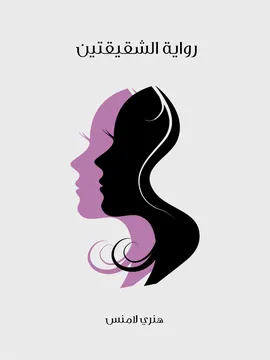

رواية الشقيقتين

قراءة عربية أصلية محددة النطاق في الصفحات 9 إلى 14 من ملف PDF المرتبط، وليست تلخيصا كاملا للكتاب. نناقش ما تدعمه هذه المقاطع فقط.
شقيقتان توأمان: سوسنة وردة في بيت القنصل
يرسم المقطع حياة البارون المنقطعة إلى الهدوء في ضيافة القنصل؛ فقد كان يتنسم في وسط الجبال الريح الطيبة ويتهنأ بنسيم الحرية، ويتجول بصحبة مضيفه في الأنحاء المجاورة، فيطويان البيد تارة على صهوات الخيل ويهبطان إلى الوديان أو يسعيان في الجبال للصيد والقنص، بعيدًا عن ضوضاء العالم ومجالس المسامرات الباطلة. وما زاد البارون بساطًا وانشراحًا إلا اجتماعه مع لفيف عائلة القنصل في طرفي النهار، فينبذ كل تكلف ويطلق لعواطفه العنان. ومنذ أول يوم وصوله شعر قلبه مائلًا إلى ابنتي القنصل «سوسنة» و«وردة»، وهما شعبتا أصل واحد وأمومة في اليوم ذاته، لم يكد عمرهما يربو على الثماني عشرة سنة وهما تتشابهان قدًّا وحسنًا. ولدتا في أرض المغرب ونمتا وترعرعتا في الشرق، فجمعتا سذاجة البلاد الشمالية ممدوجة بشيء من ترف الخافقين، وأرضعتهما أمهما العاقلة منذ الصغر روح التقى والحشمة. وكان تشابههما بالخلقة والقد والصوت كتشابه الذرة بالذرة، حتى اضطر أهلهما إلى وضع علامات خاصة لئلا يقع الالتباس بينهما، قبل أن يبدأ بعض التباين في الظهور في سنتهما الثانية.
زاوية وحدود القراءة
قراءة موجزة من ص ٩ إلى ص ١٤ من أصل ٤٤ صفحة، تعرض بداية الرواية، لا الرواية كاملة.
الطبعة والقراءة
هذه النسخة من الكتاب صادرة ومتاحة مجانًا من مؤسسة هنداوي بشكل قانوني؛ حيث إن نص الكتاب يقع في نطاق الملكية العامة تبعًا لقوانين الملكية الفكرية.
تنزيل PDF المجاني ↓ القراءة والمصدر الرسمي ↗